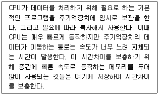

PC정비사-2급 (2015-10-25 기출문제)
1과목: PC유지보수
1. GUI에 대한 설명 중 올바른 것은?
- MAC OS 에서는 X Window System을 통해 구현하고 있다.
- GUI형 웹 브라우저의 개발은 인터넷의 대중화에 기여했다.
- Windows 기반의 운영체제에서만 지원하며 Linux에서는 사용할 수 없다.
- 사용자 중심적 도스쉘 인터페이스를 제공한다.
(정답률: 77%)

2. Windows 7 Professional의 보조 프로그램 중 시스템 도구에 대한 설명으로 잘못된 것은?
- 보안 센터 - PC의 보안을 위해 사용자별 로그인 암호를 지정할 수 있다.
- 디스크 정리 - 디스크에서 필요 없는 파일을 찾아 준다.
- 시스템 복원 - 복원 지점을 만들거나 선택한 복원 시점으로 시스템을 복원할 수 있다.
- 시스템 정보 - 현재 시스템 정보를 표시한다.
(정답률: 66%)
3. Windows 7에서 공유 프린터를 만들 때마다 시스템이 드라이버를 공유하는 곳은?
- ADMIN$
- C$
- REPL$
- PRINT$
(정답률: 89%)
4. Windows 7 Professional 의 빠른 사용자 전환에 대한 설명 중 잘못된 것은?
- 컴퓨터에 2개 이상의 사용자 계정이 있는 경우 사용할 수 있다.
- 로그오프나 프로그램을 종료하지 않고도 다른 사용자가 컴퓨터에 손쉽게 로그온 할 수 있다.
- 빠른 사용자 전환시, 열려 있거나 작업중인 파일은 자동으로 저장된다.
- 원격 데스크톱 연결을 사용하여 원격 컴퓨터에 로그온한 경우 해당 컴퓨터에서 빠른 사용자 전환을 사용할 수 없다.
(정답률: 62%)
5. 하드디스크의 포맷작업이 완료된 후 사용자가 실제 쓸 수 있는 용량은 하드디스크에 표기된 것보다 적다. 그 이유로 올바른 것은?
- 하드디스크에 오류가 있어 쓸 수 있는 공간이 줄어든 것이다.
- 하드디스크 포맷에 필요한 기본 용량 때문이다.
- 하드디스크 전체 용량의 10%는 파티션 테이블을 위한 공간이기 때문에 데이터를 저장할 수 없다.
- 하드디스크 제조업체에서는 1KB를 1000Byte로 계산하지만 실제로는 1024Byte로 계산된다.
(정답률: 87%)
6. Windows 7 Professional에서 장치관리자에 관한 설명 중 잘못된 것은 ?
- 장치관리자는 하드웨어의 정보를 확인하며 하드웨어의 추가/제거 등의 작업을 수행할 수 있다.
- 드라이버 탭에서는 해당 장치를 구동하기 위하여 설치된 설치경로와 파일명을 확인할 수 있다.
- 드라이버 업데이트를 통해 새로운 드라이버를 설치할 수 있다.
- 드라이버 롤백 기능은 Windows XP 이후 운영체제에서는 지원되지 않는다.
(정답률: 86%)
7. Windows 7 Professional의 시스템 종료에 대한 설명 중 잘못된 것은?
- 컴퓨터 내부의 하드웨어를 추가하거나 업그레이드하려면 절전모드가 아니라 컴퓨터의 완전한 종료 및 재부팅이 필요하다.
- 시작 단추를 클릭한 다음 열린 창의 우측 하단에서 ‘시스템 종료’를 클릭한다.
- CMD 콘솔에서 ‘tsshutdn’ 명령어로 예약 종료가 가능하다.
- 노트북의 경우 덮개를 닫으면 대부분 절전모드로 전환되며 이는 전원 관리 옵션에서 변경이 가능하다.
(정답률: 81%)
8. 다음은 무엇에 대한 설명인가?

- 롬(ROM)
- 플래시 롬(Flash ROM)
- 캐시 메모리(Cache Memory)
- 마스크 롬(Mask ROM)
(정답률: 90%)
9. 컴퓨터 시스템의 성능 극대화 측면에서 운영체제의 목적이 아닌 것은?
- 처리능력의 증대
- 편의성의 극대화
- 신뢰도 향상
- 사용 가용도의 증대
(정답률: 82%)
10. 인터넷 익스플로러에 나타나는 오류 메시지에 대한 설명 중 잘못된 것은?
- 503 Service Unavailable - 해당 웹 사이트의 서버에 과부하등의 이유로 서비스가 멈춘 경우
- 403 Forbidden - 패스워드와 같은 특별한 액세스 승인을 필요로 하는 사이트의 경우
- Bad File Request - 특별한 프로그램 설치가 필요한 페이지인 경우
- 404 Not Found - 브라우저가 호스트 컴퓨터는 찾았으나 요청된 특정 도큐먼트를 찾지 못한 경우
(정답률: 80%)
11. 실시간체제(Real-Time System)란 처리를 요구하는 자료가 발생할 때마다 즉시 처리하여 그 결과를 출력하거나 요구에 대한 응답을 즉시 실행하는 방식이다. 이에 대한 장점이 아닌 것은?
- 자료가 발생한 지점에서 단말기를 통한 입출력이 가능하므로 사용자의 노력이 절감된다.
- 다량의 자료가 무작위로 도착하는 경우에도 특별히 입출력자료의 저장이나 대기가 필요하지 않다.
- 처리시간이 단축된다.
- 비용이 절감된다.
(정답률: 73%)
12. Windows 7 Professional 에서 ‘드라이브의 문자 또는 경로’ 를 사용자가 원하는 문자로 변경하기 위하여 사용하는 명령어는?
- fsmgmt.msc
- diskmgmt.msc
- services.msc
- eventvwr.msc
(정답률: 80%)
13. 실행 파일의 확장자가 COM 또는 EXE에 대한 설명으로 올바른 것은?
- EXE 파일은 하나의 세그먼트 내에서 실행된다.
- COM 파일은 일반적으로 EXE 파일에 비해 실행 속도가 빠르다.
- COM 파일은 실행 중 세그먼트의 변경이 가능하다.
- EXE 파일은 COM 파일에 비해서 일반적으로 작다.
(정답률: 70%)
14. 바이러스/웜의 증상에 속하지 않는 것은?
- 특정 파일을 읽을수가 없다며 실행되지 않는다.
- 파일의 속성이 바뀌어 있다.
- 부팅 시간이 평소보다 오래 걸리거나, 부팅 자체가 되지 않는다.
- 인터넷 시작페이지가 사용자의 의사와 상관없이 특정 사이트로 고정되어 변경할 수 없다.
(정답률: 72%)
15. 다음 프로그램 중에서 성격이 다른 하나는?
- Auslogics Disk Defrag
- Microsoft Security Essentials
- V3
- AVG Anti-Virus
(정답률: 80%)
2과목: PC운영체제
16. HDD의 전송 모드는 크게 PIO, DMA 방식이 있다. ‘PIO 모드’를 설명한 것으로 올바른 것은?
- 데이터 전송 시 전용 컨트롤러가 관리한다.
- 다른 말로 ‘ATA 모드’ 라고도 한다.
- PIO 0~9번까지 규격이 있으며 숫자가 낮을수록 전송 속도가 빠르다.
- 데이터 전송을 CPU가 직접 제어하는 방식으로 멀티태스킹 시에는 속도저하가 발생한다.
(정답률: 55%)
17. JEDEC(Joint Electron Device Engineering Council)에서 제정한 RAM의 규격으로 잘못된 것은?
- ODD
- DDR3
- RD-RAM
- SDR
(정답률: 83%)
18. 캐시 메모리(Cache Memory)에 대한 설명 중 잘못된 것은?
- 캐시 메모리의 데이터 액세스 속도는 일반 RAM과 같다.
- 고속의 CPU와 주기억장치 사이의 속도 차이를 완화시키기 위한 고속 버퍼 메모리이다.
- L1 캐시는 CPU 상에 내장되어 있다.
- 트레이스 캐시는 인텔 프로세서에서 쓰이며 이미 디코딩된 마이크로 연산들을 저장하거나 복잡한 x86 명령어를 번역한다.
(정답률: 66%)
19. 키보드의 인터페이스가 아닌 것은?
- LPM
- AT
- PS/2
- USB
(정답률: 76%)
20. KS X 5002 ‘정보처리용 건반 배열’ 에서 지정한 표준 자판 배열 방식은?
- 세벌식 390 자판
- KPS 9256
- 표준 한글 2벌식
- 안마테 자판
(정답률: 84%)
21. 사용자가 손가락으로 직접 볼을 굴려 작동하는 형태의 마우스는?
- 볼 마우스
- 터치 패드
- 포인팅 스틱
- 트랙볼 마우스
(정답률: 86%)
22. 비디오카드를 구성하는 여러 가지 요소 중 관계없는 것은?
- 칩셋
- 램
- 바이오스
- CRT 편향코일
(정답률: 69%)
23. CPU 성능 평가 지표가 아닌 것은?
- 클럭 속도
- 캐시 메모리
- 집적도
- RAM 속도
(정답률: 72%)
24. 다음 PC의 각 부속품에 대한 설명 중 잘못된 것은?
- 레귤레이터는 PC의 전원 공급 장치에서 공급되는 전압을 CPU에 맞는 전압으로 변환시킨다.
- 파이프라인 버스트(Pipelined Burst) SRAM은 일반 RAM보다 고속의 처리가 가능한 특수한 형태의 SRAM이다.
- 플래시 바이오스는 소프트웨어적으로 업그레이드가 불가능한 바이오스이다.
- 펜티엄 프로세서는 CPU 내에도 캐시메모리를 가지고 있다.
(정답률: 64%)
25. PCI-Express x16 Bus의 최대 전송 속도는?
- 33MB/초
- 8GB/초
- 66MB/초
- 100GB/초
(정답률: 79%)
26. USB에 관한 설명 중 잘못된 것은?
- 시리얼 포트의 일종이다.
- 4개의 핀이 있으며, +5V가 케이블 자체에서 공급된다.
- 최대 127개의 주변장치를 연결할 수 있다.
- USB 1.1규격에 따르면 연결된 모든 장치는 최대 20Mbps의 전송속도를 지원한다.
(정답률: 74%)
27. ‘00-00-1C-D1-85-2C’ 가 의미하는 것은?
- MAC Address
- Network Address
- IP Address
- Node Address
(정답률: 82%)
28. 종료(Termination) 설정이 필요 없는 장치는?
- 스카시 호스트 어댑터
- 동축 케이블을 이용한 네트워크 구성
- 스카시를 이용한 스캐너
- UTP 케이블을 이용한 네트워크 구성
(정답률: 72%)
29. 기가비트 이더넷 어댑터에 대한 설명으로 잘못된 것은?
- 최근 기가비트 이더넷 기능이 포함된 메인보드가 출시되고 있다.
- 최고 1,000Mbps의 전송 속도를 낼 수 있다.
- 최고 전송 속도를 내려면 Category3 UTP 케이블로 연결한다.
- 광섬유 케이블을 사용하는 기가비트 이더넷 어댑터도 있다.
(정답률: 68%)
30. 뮤직 신디사이저, 악기, 컴퓨터 등을 상호 접속이 가능하도록 하는 인터페이스 규격은?
- MPEG
- MPC
- BUS
- MIDI
(정답률: 84%)
3과목: PC주변기기
31. 하드디스크에 파일을 복사하는 도중 복사가 중단되면서 복사할 영역이 부족하다는 메시지가 출력될 경우 타당한 해결책이 아닌 것은?
- 휴지통 비우기를 실행한다.
- 바탕화면의 사용하지 않는 파일들을 ‘내 문서’폴더로 이동 시킨다.
- ‘C:\Windows\Temp’ 디렉터리 밑의 임시 파일들 중 사용되지 않는 임시파일을 모두 지운다.
- Netscape 또는 Internet Explorer등의 웹 검색기들에 의해 유지되는 캐시 파일들을 모두 지운다.
(정답률: 80%)
32. 다음 하드웨어중 부팅 과정에서 가장 마지막 단계에서 점검되는 것은?
- CPU
- 그래픽카드
- 메모리
- 하드디스크
(정답률: 76%)
33. 컴퓨터를 조립 및 분해하는 과정에서 주의해야할 사항이 아닌 것은?
- 컴퓨터의 모든 커넥터는 반대로 연결 할 경우 들어가지 않으므로 방향을 확인 할 필요가 없다.
- 정전기 발생을 조심하여야 한다.
- 잘 모르는 것이 있으면 반드시 메뉴얼을 참고하여야 한다.
- 조립과 분해를 할 경우 주위를 정리하면서 하는 것이 도움이 된다.
(정답률: 84%)
34. PC 조립에서 각종 케이블과 메인보드 연결 시 주의사항으로 잘못된 것은?
- PC 케이스의 LED와 스피커 커넥터가 메인보드에 연결되어 있지 않으면 PC가 부팅이 되지 않는다.
- 전원 스위치, 리셋 스위치는 커넥터에 반대로 연결해도 동작이 된다.
- 전원 케이블에는 여러 종류의 전압이 출력된다.
- 전원 LED와 하드디스크 LED 신호 케이블은 극성이 있기 때문에 반대로 연결되면 램프가 작동하지 않는다.
(정답률: 55%)
35. FSB 800인 시스템에서, PC2-6400과 PC2-5300 SDRAM을 혼용했을 경우 결과는?
- PC2-6400으로 동작한다.
- PC2-5300으로 동작한다.
- FSB 133으로 동작한다.
- 대역폭이 다르므로 함께 사용할 수 없다.
(정답률: 80%)
36. BIOS 설정을 할 때 일반적으로 설정할 수 있는 항목이 아닌 것은?
- 하드디스크 파티션 설정
- 부팅 드라이브의 우선순위
- 시스템의 날짜 및 시간
- 하드디스크 타입
(정답률: 72%)
37. 전자파와 VDT 증후군에 대한 설명으로 잘못된 것은?
- 전자파는 자계를 일으키는 모든 기기에서 발생한다.
- 컴퓨터 모니터를 장시간 보고 작업을 하면 시력이 약화 될 수 있다.
- 부적절한 작업 자세로 인하여 목, 어깨, 손목 등의 통증이 유발된다.
- CPU의 처리속도가 낮을수록 전자파의 세기가 강해진다.
(정답률: 86%)
38. 램 상주 프로그램이 지나치게 많아 프로그램이 메모리 부족으로 실행되지 않을 때 나타나는 메시지는?
- CMOS Failed
- Out of Memory
- Invalid Command
- NO CNTRLR PRESENT
(정답률: 85%)
39. 컴퓨터 부팅 시 나타나는 에러 메시지 중 메모리에 관련된 것이 아닌 것은?
- Refresh Failure
- Parity Error
- Base 64KB Memory Failure
- 8042-Gate A20 Failure
(정답률: 65%)
40. 메인보드의 고장으로 메인보드만 교체하려고 할 때 고려할 사항으로 잘못된 것은?
- 기존의 CPU를 지원하는 메인보드 칩셋인지 확인한다.
- 메모리 소켓 및 동작 클럭을 확인한다.
- VGA 슬롯방식을 확인한다.
- 고사양의 3D 게임, 3D 디자인을 할 목적이라면 반드시 그래픽 컨트롤러가 내장된 메인보드를 구입해야 한다.
(정답률: 77%)
41. 잉크젯 프린터의 노즐이 막혔을 때 대처 요령으로 올바른 것은?
- 송곳으로 뚫는다.
- 뜨거운 물에 적셔 준다.
- 헤드를 교체한다.
- 노즐 부분을 건조시킨다.
(정답률: 80%)
42. 회로시험기의 레인지를 DCV에 놓고 파워서플라이를 측정하려고 한다. 사용 용도로 가장 올바른 것은?
- 입력 전압이 올바른지 확인할 때 사용
- 출력 전압이 올바른지 확인할 때 사용
- 연결선의 단선 여부를 확인할 때 사용
- 출력 전류 값이 올바른지 확인할 때 사용
(정답률: 70%)
43. 사운드 카드의 고장 원인과 수리 방법에 대한 설명으로 올바른 것은?
- 사운드 카드 설치 후 스캐너가 동작하지 않는 경우 - CMOS 셋업을 재설정한다.
- 사운드 카드 설치 후 비디오 카드에서 캡쳐 기능이 실행되지 않는 경우 - TCP/IP 설정을 바꾼다.
- Windows 설치 도중 사운드 카드를 찾지 못하는 경우 - 주변기기와 충돌을 확인하여 수정한 후 “새 하드웨어 설치”를 이용하여 설치한다.
- 사운드 카드와 모뎀이 충돌하는 경우 - “내게 필요한 옵션”에서 디스크 드라이브 설정을 변경한다.
(정답률: 63%)
44. 오버클럭킹(Over Clocking)에 대한 설명 중 잘못된 것은?
- 인텔 i5-2500K CPU는 배수락이 해제된 프로세서로 오버클러킹에 유리하다.
- 배수 변경에 의한 오버클럭은 메모리 부분 클럭에 영향을 주지 않는다.
- CMOS의 CPU Core Voltage 에서 전압을 높여주면 오버클럭 헤드룸이 향상되나 지나치게 높은 경우 부품에 손상을 가져올 수 있다.
- 보드에서 지원하지 않는 베이스클럭으로도 오버 할 수 있다.
(정답률: 74%)
45. 시리얼 ATA 하드디스크 인터페이스에 대해 설명한 것 중 잘못된 것은?
- 병렬 방식보다 빠른 속도를 지원할 수 있다.
- 커넥터 당 1개의 하드디스크를 장착할 수 있다.
- 점퍼 설정으로 마스터와 슬레이브를 설정할 수 있다.
- 핫 플러깅을 지원한다.
(정답률: 60%)
4과목: PC네트워크
46. UTP 케이블을 사용하여 두 대의 컴퓨터를 직접 연결하는 방법으로 가장 적당한 것은?
- 568A 형태로 양쪽이 결선된 다이렉트 케이블 사용
- 568B 형태로 양쪽이 결선된 다이렉트 케이블 사용
- UTP 케이블의 8가닥의 선 중 4가닥만을 사용하므로 양쪽 모두 1,2,3,4번 선의 위치를 같게 하여 결선된 케이블을 사용
- 568A와 568B 형태로 양쪽이 결선된 크로스 케이블을 사용
(정답률: 70%)
47. 인터넷(WWW)의 표준으로 올바른 것은?
- Apple Talk
- NetBEUI
- TCP/IP
- RIP
(정답률: 84%)
48. TCP/IP 프로토콜의 하나로 호스트끼리 Mail을 전송하는데 직접적으로 관여하는 프로토콜은?
- SMTP
- UDP
- TFTP
- ICMP
(정답률: 82%)
49. 프록시 서버(Proxy Server)의 기능을 올바르게 설명한 것은?
- 자주 접속하는 사이트의 데이터를 서버에 저장 해 둠으로서 인터넷 속도를 개선한다.
- 접속했던 사이트의 기록을 제거한다.
- 인터넷 접속을 위한 통신 프로토콜이다.
- 웹 서비스외에 뉴스 그룹이나 FTP 서버에 접속하기 위해서는 반드시 있어야 한다.
(정답률: 67%)
50. 크래커(Cracker)에 대한 설명 중 올바른 것은?
- 프로그램을 개발하는 사람 모두를 말한다.
- 악의를 가지고 다른 사람의 컴퓨터에 접근하여 데이터 또는 프로그램을 훔쳐 보거나, 수정/파괴 등을 일삼는 사람을 말한다.
- 컴퓨터 또는 컴퓨터 프로그래밍에 뛰어난 기술자로서 네트워크의 보안을 지키는 사람을 말한다.
- 네트워크 관리자를 말한다.
(정답률: 84%)